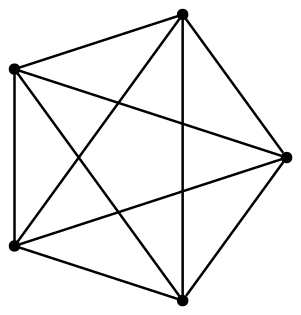

Core Java. Лекция 10
Java Concurrency
@inponomarev
Иван Пономарёв, КУРС/МФТИ
Concurrency — конкурентное выполнение
Одна программа — много одновременно выполняющихся тредов (threads)
Зачем нам вообще Concurrency?
— Для перформанса, чтобы побыстрее!
Где мы можем получить выгоду от concurrency?
Много CPU-ядер, вычислительная задача хорошо разделяется на подзадачи.
Подзадачи блокируются на вводе/выводе, можно параллельно ждать других или делать что-то полезное.
Нужно быстро отреагировать на запрос, а потом дать детальный ответ (пользовательский интерфейс).
Многопользовательский сервис (каждый запрос в своём треде).
Где мы НЕ можем получить выгоду от [увеличения] concurrency?
CPU-bound задача не будет решаться быстрее, если тредов больше, чем ядер.
Задача плохо параллелизуется (упирается в неразделяемый ресурс).
Нас ограничивает закон Амдала.
Закон Амдала (Amdahl’s law)
α — доля вычислений, которая должна выполняться последовательно,
N — число параллельных потоков выполнения,
S — полученное ускорение (speedup).
Вывод: если разделяемая работа составляет 80%, вы не получите более чем пятикратное увеличение производительности за счёт параллелизации.
Закон Амдала: поведение

На самом деле, всё ещё хуже!
\[\Large
N = 4, E = 6\] | \[\Large
N = 5, E = 10\] | \[\Large
N = 6, E = 15\] | \[\Large
N = 7, E = 21\] |
 |  |  |  |
На самом деле, всё ещё хуже!
Uiversal Scalability Law — полуэмпирическое обобщение закона Амдала
β — параметр, определяющий cohesion (межпоточную координацию)
хорошо ложится на эмпирические данные
USL: поведение

Промежуточный вывод
Перед тем, как встать на скользкую тропу многопоточного программирования, подумайте:
нужно ли это для решения задачи?
насколько многопоточным должно быть решение?
Вас предупредили.

Часть 1. Зачем нужна и как достигается синхронизация
Многопоточность в Java (с самой первой версии!)
class CalcSquare extends Thread {
final int argument;
int result;
CalcSquare(int argument) {
this.argument = argument;
}
@Override
public void run() {
//«сложные» вычисления
result = argument * argument;
}
}Запуск параллельных вычислений через Thread API
NB: в современной реальности вы не будете пользоваться Thread API
CalcSquare t1 = new CalcSquare(2);
CalcSquare t2 = new CalcSquare(3);
t1.start();
t2.start();
t1.join();
t2.join();
System.out.printf("%d, %d%n", t1.result, t2.result);
//otput: 4, 9Проблемы с shared state
|
Race condition
class DumbCounter {
int count;
void increment(){
count++;
}
}
DumbCounter c1 = new DumbCounter();
IntStream.range(0, 1000000).forEach(i->c1.increment());
DumbCounter c2 = new DumbCounter();
IntStream.range(0, 1000000).parallel().forEach(i->c2.increment());
System.out.printf("%d, %d%n", c1.count, c2.count);
//1000000,??????Stale values
class DumbWayToFallAsleep implements Runnable {
private boolean asleep;
public void setAsleep(boolean asleep){
this.asleep = asleep;
}
@Override
public void run() {
while (!asleep){
//countSomeSheep
//УСНЁМ ЛИ МЫ?
}
}
}Reordering
class PossibleReordering {
static int x = 0, y = 0, a = 0, b = 0;
public static void main(String... args)
throws InterruptedException {
//другой способ запуска треда (тоже не будете пользоваться)
Thread one = new Thread(() -> {
a = 1; x = b;
});
Thread two = new Thread(() -> {
b = 1; y = a;
});
one.start(); two.start();
one.join(); two.join();
System.out.printf("%d,%d", x, y);
//??,??
}
}Thread one, Thread two
Thread one = new Thread(() -> {
a = 1; x = b;
});
Thread two = new Thread(() -> {
b = 1; y = a;
}); x y a b
a = 1; 0 0 1 0
x = b; 0 0 1 0
b = 1; 0 0 1 1
y = a; 0 1 0 0Thread two, Thread one
Thread one = new Thread(() -> {
a = 1; x = b;
});
Thread two = new Thread(() -> {
b = 1; y = a;
}); x y a b
b = 1; 0 0 0 1
y = a; 0 0 0 1
a = 1; 0 0 1 1
x = b; 1 0 1 1Threads interleaved
Thread one = new Thread(() -> {
a = 1; x = b;
});
Thread two = new Thread(() -> {
b = 1; y = a;
}); x y a b
a = 1; 0 0 1 0
b = 1; 0 0 1 1
x = b; 1 0 1 1
y = a; 1 1 1 1
or
y = a; 0 1 1 1
x = b; 1 1 1 1Промежуточные выводы
Из-за reordering и других низкоуровневых особенностей нельзя рассуждать о результате работы одного треда с точки зрения другого треда как о промежуточном результате выполнения исходного кода.
Все проблемы с параллельными вычислениями связаны с shared state.
Показанные здесь проблемы проявляются недетерминированно.
Любая программа с доступом к shared state без должной синхронизации — сломана, даже если «вчера это работало на моей машине».
Модель памяти
int aVariable = 42;Модель памяти (Java Memory Model, JMM) — спецификация языка и виртуальной машины, отвечающая на вопрос: «при каких условиях поток, читающий переменную
aVariable, увидит значение 42?»
Happens-before
JMM определяет частичный порядок на всех действиях в Java-программе, называемый happens-before.
Отношение happens-before транзитивно: \(A \prec B \wedge B \prec C \Rightarrow A \prec C\)
Чтобы действие B гарантированно видело результат работы действия A, достаточно, чтобы \(A \prec B\).
Program order rule
В рамках одного треда все действия happens-before в порядке их определения в исходном коде программы.
Иными словами, однопоточные программы выполняются без сюрпризов.
Thread start & thread termination rule
Вызов
threadA.start()happens-before всех операций в потокеthreadA.Любая операция в потоке
threadAhappens-before обнаружения другим потоком завершенияthreadA, либо путём выхода изthreadA.join(), либо путём проверкиthreadA.isAlive() == false.Благодаря этому правилу, наш самый первый пример на параллелизацию работает корректно.
Ключевое слово volatile
Переменные классов могут быть определены с ключевым словом
volatile.Запись в
volatile-переменную happens-before чтения из этой переменной в другом потоке.Это автоматом делает видимыми изменения в других переменных. Полагаться на это не рекомендуется: это работает, но делает код хрупким. В процессе рефакторинга можно поменять порядок доступа к переменным и тем самым незаметно поломать программу.
Чиним stale value при помощи volatile
class NotSoDumbWayToFallAsleep implements Runnable {
private volatile boolean asleep;
public void setAsleep(boolean asleep){
this.asleep = asleep;
}
@Override
public void run() {
while (!asleep){
//countSomeSheep
//...
}
}
}final-поля
Если объект правильно опубликован, т. е. ссылка на него не утекает во время выполнения конструктора —
final-поля объекта доступны всем тредам без синхронизации.Лучший способ борьбы с проблемами mutable state — использовать immutable state где только возможно.
Неатомарные операции: final не годится, volatile не спасёт
(Мы можем объявить | (Кстати, |
Несинхронизированное выполнение
Синхронизированное выполнение
Блокировки
//Reentrant так называется потому,
//что одному и тому же треду позволено входить повторно
private ReentrantLock bankLock = new ReentrantLock();
void moneyTransfer(int from, int to, int amount) {
bankLock.lock();
try {
accounts[from]-=amount;
accounts[to]+=amount;
} finally {
bankLock.unlock();
}
}Если вы задались вопросом: «где гарантии, что после выхода из блокировки тред увидит результат работы предыдущего треда?» — поздравляю, вы начали что-то понимать.
JMM Monitor Lock Rule
Разблокировка (unlocking) happens-before другой блокировки (locking) того же самого «замка» (lock).
Поэтому защищённые блокировкой переменные объявлять как
volatileуже не нужно.
В чём проблема здесь?
while (accounts[from] < amount) {
//wait ....
}
bankLock.lock();
try {
//transfer funds ...
} finally {
bankLock.unlock();
}Доступ к accounts[from] не синхронизирован, но даже если бы он был синхронизирован, кто-то смог бы уменьшить количество денег до вхождения в блок transfer funds.
В чём пробема здесь?
bankLock.lock();
try {
while (accounts[from] < amount) {
//wait ....
}
//transfer funds ...
} finally {
bankLock.unlock();
}Мы заблокировали bankLock и ждём, пока кто-то закинет денег. Но никто никогда не сможет это сделать, т. к. bankLock занят нами.
Condition Objects
private ReentrantLock bankLock = new ReentrantLock();
private Condition sufficientFunds = bankLock.newCondition();
void moneyTransfer(int from, int to, int amount) {
bankLock.lock();
try {
while (accounts[from] < amount)
sufficientFunds.await();
accounts[from]-=amount;
accounts[to]+=amount;
sufficientFunds.signalAll();
} finally {
bankLock.unlock();
}
}Condition Objects: что происходит?
await()отпускает блокировку и переводит тред в ждущее состояние,signalAll()сигнализирует всем ждущим тредам, что что-то поменялось,выход из
await()снова захватывает блокировку.При выходе из
await()мы вновь проверяем условие, потому что:сигнал мог быть по другому поводу,
возможны «спонтанные пробуждения».
Контрольный вопрос
Чем гарантировано, что при выходе из
await()мы увидим изменения, сделанные другим тредом?
При выходе из
await()мы снова захватываем блокировку, работает JMM Monitor Lock Rule.
Правильный паттерн ожидания condition
while (!okToProceed())
condition.await();Intrinsic lock
Начиная с Java 1.0, каждый объект имеет встроенный (intrinsic) lock.
У каждого intrinsic lock есть один condition.
То же самое, с помощью intrinsic lock
//enter intrinsic lock on *this*
synchronized void moneyTransfer(int from, int to, int amount) {
while (accounts[from] < amount)
wait(); //wait on intrinsic object's lock condition
accounts[from]-=amount;
accounts[to]+=amount;
notifyAll(); //notify all threads waiting on the condition
}Synchronized-блок
Другая форма использования intrinsic locks:
private Object lock = new Object();
void moneyTransfer(int from, int to, int amount) {
synchronized (lock) {
while (accounts[from] < amount)
lock.wait();
accounts[from]-=amount;
accounts[to]+=amount;
lock.notifyAll();
}
}Промежуточный итог по intrinsic conditions
Нужно работать по строгому паттерну:
синхронизация,
while-loop wait,
нотификация.
Нужно держать в уме:
по intrinsic lock какого объекта синхронизируемся,
по condition какого объекта ждём,
треды, ждущие на condition какого объекта нотифицируем (это всё должен быть один объект).
В общем, это низкоуровневый и сложный механизм. Его понимание пригодится на собеседованиях, но скорее всего, вам не надо будет им пользоваться.
Теперь нам понятен смысл всех возможных состояний треда
Промежуточный итог по всему вышесказанному
Где возможно, используйте immutable state: он автоматически потокобезопасен.
Используйте volatile переменные или синхронизацию для доступа к mutable state.
Удерживайте блокировку во время выполнения операций, которые должны быть атомарными.
Повторим ещё раз: программа с shared mutable state без должной синхронизации — сломанная программа.
Думайте о потокобезопасности всё время.
Понимание JMM помогает
Часть 2. Deadlocks
Deadlock: простой пример
Перепутанный порядок блокировки
class LeftRightDeadlock {
private final Object left = new Object();
private final Object right = new Object();
void leftRight() {
synchronized (left) {
synchronized (right) {
doSomething();
}
}
}
void rightLeft() {
synchronized (right) {
synchronized (left) {
doSomethingElse();
}
}
}
}Перепутанный (иногда!) порядок блокировки
void transferMoney(Account fromAccount, Account toAccount,
int amount) throws InsufficientFundsException {
synchronized (fromAccount) {
synchronized (toAccount) {
if (fromAccount.getBalance() < amount)
throw new InsufficientFundsException();
else {
fromAccount.debit(amount);
toAccount.credit(amount);
}
}
}
}Выводы
Если процедура захватывает несколько блокировок, возможен deadlock.
Во избежание deadlocks нужно следить за тем, чтобы блокировки всегда захватывались в одном и том же порядке. Иногда неочевидно, как это сделать.
Если вы захватили блокировку — закончите с ней как можно быстрее, не вызывайте внешних методов.
Часть 3. Потокобезопасные структуры данных
Неблокирующие алгоритмы
Блокировка (через
synchronizedилиReentrantLock) решает вопрос координации действий разных тредов с переменной.Но если много тредов конкурируют за блокировку (high lock contention), затраты ресурсов на координацию тредов становятся значительными.
Альтернативой являются неблокирующие алгоритмы, использующие поддержку специальных атомарных машинных инструкций (compare-and-swap).
В Java-библиотеке доступны классы атомарных переменных и потокобезопасные коллекции, реализованные в том числе на неблокирующих алгоритмах.
Atomics
package java.util.concurrent.atomicAtomicBoolean,AtomicInteger,AtomicLong,AtomicReference.AtomicIntegerArray,AtomicLongArray,AtomicReferenceArray.
Могут быть использованы как «улучшенные volatile-переменные», т. к. результат вызова
set(…)виден другим тредам при вызовеget(…)Поддерживают атомарные операции.
Aтомарные операции в классах атомарных переменных
getAndSet(newValue) compareAndSet(expect, update)
incrementAndGet() decrementAndGet()
getAndIncrement() getAndDecrement()
getAndAdd(delta) addAndGet(delta)
getAndUpdate(updateFunction)
updateAndGet(updateFunction)
getAndAccumulate(x, accumulatorBiFunction)
accumulateAndGet(x, accumulatorBiFunction)Потокобезопасные коллекции
В ранних версиях Java можно было «сделать» коллекцию потокобезопасной, обернув в
Collections.synchronizedXXX(…). Это сериализовывало любой доступ к внутреннему состоянию коллекции. Из-за поддержки обратной совместимости сейчас так тоже можно, но не нужно.Цена такого решения — плохой параллелизм: конкуренция за блокировку (lock contention).
С версии 5 появились классы, специально разработанные для потокобезопасности, с меньшим количеством блокировок.
Их использование является предпочтительным.